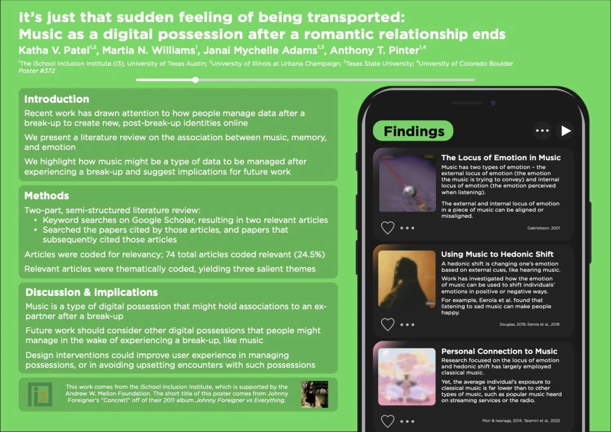

Overview
“It’s just that sudden feeling of being transported: Music as a digital possession after a romantic relationship ends” — Published poster, iConference 2023, presented through the i3 Inclusion Institute at UT Austin
A literature review co-authored with three collaborators, examining how people process music as a digital possession after a breakup — and what that means for how streaming platforms should be designed around life transitions. Synthesized 324 articles down to three core themes through a structured coding and thematic analysis process. Personally, I led the section on hedonic shifting, exploring how music can pull someone’s emotions in unintended directions after a relationship ends.
